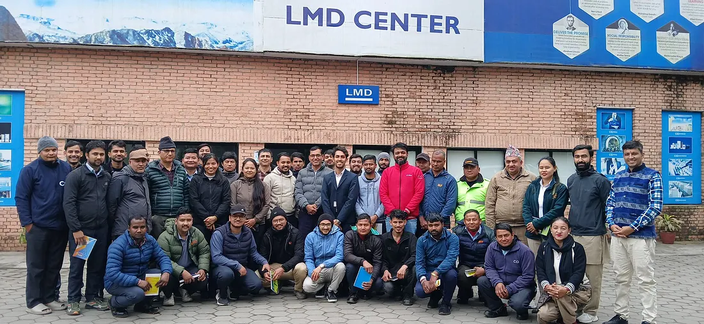
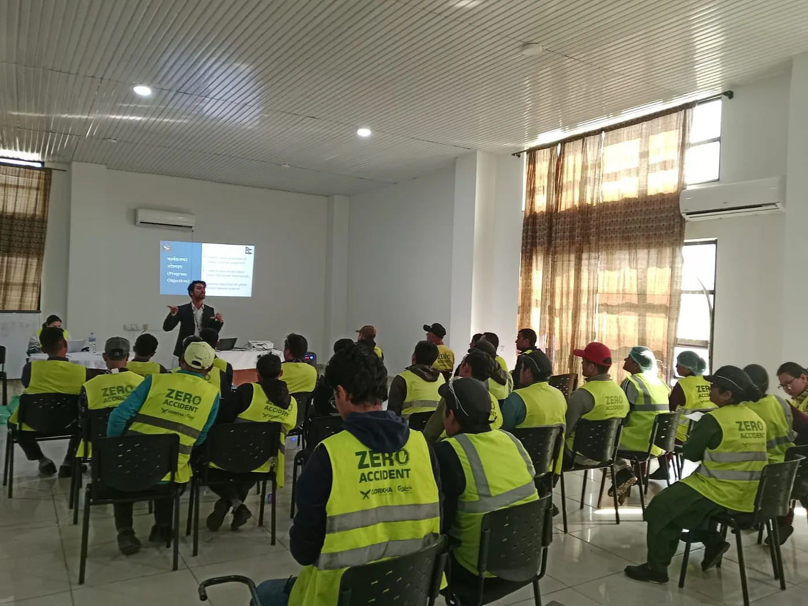
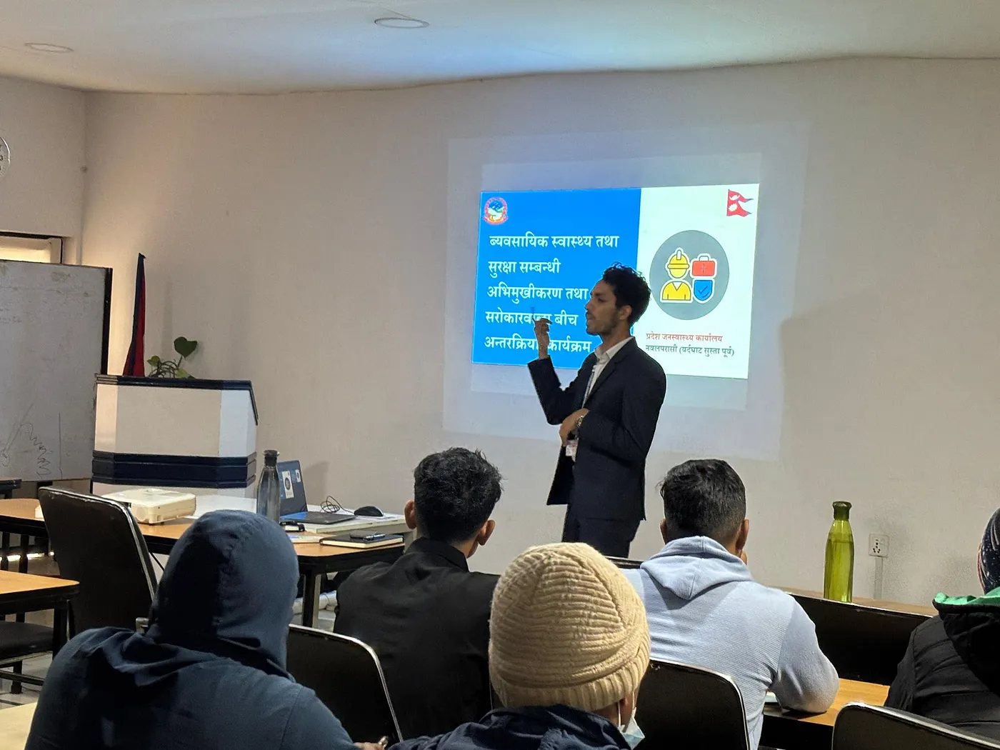
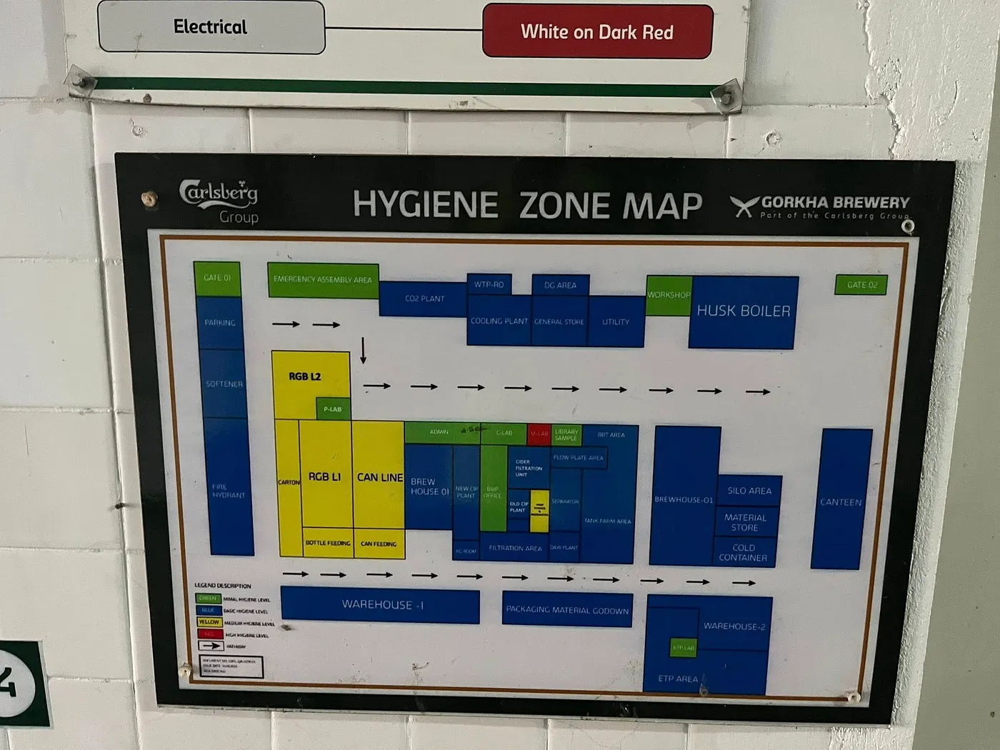

Who would have thought an idea could actually turn into an approved program?
Who would have thought that the yearly emails asking for “new programs” were actually looking for fresh initiatives?
Who would have imagined that a government, running decade-old priorities from the 10th Five-Year Plan as P1 and P2 programs in the same old format, could actually make space for local priorities?
Who would have guessed that the federal governance structure could provide fiscal and programmatic flexibility to address district-based public health needs?
Well, it happened. And here’s a small story about our adaptive government system that asks, listens, and implements.
Turning a Proposal into a Program
Last year, we proposed an Occupational Safety and Health (OSH) program. And, happily, it was approved by the Ministry of Health, Gandaki Province, as a unique initiative for Nawalparasi East.
This was possible because of people willing to think beyond the box, pushing public health boundaries beyond national priorities to address local and often overlooked issues. Today, we can proudly say that this is really happening, the system is evolving, and most importantly, we can all be part of shaping it too.


Co-Working, Not Just Regulating
From planning to leading this program across multiple factories and industries, I’ve realized: government regulation alone isn’t enough. Ensuring OSH is about co-working with industries and factories to safeguard workers’ health and well-being.
We often assume that everyone is fully aware of government laws and provisions. But… have we ever paused to consider how much we ourselves truly understand? So here perhaps the first step is to co-work together, and then co-regulate with mutual understanding and respect. That’s how real, lasting impact happens.
Striking Lessons Along the Way
Along this journey, I discovered something striking that 81% of occupational health issues are diseases, and only 19% are accidents. Yet accidents grab the spotlight, while occupational diseases often remain neglected, surfacing only later in life, sometimes after retirement.
This is why programs like this must be integrated into annual plans, and why every corporate house should prioritize occupational health.

Small Steps, Big Change
Innovation in public health is possible even within long-standing systems if people dare to propose, adapt, and implement.
It may take time. The impact may not be immediate. But even a single idea, patiently nurtured, can transform systems and lives. One person’s thought, one initiative, one collaborative effort can spark a ripple of change — shaping policies, improving practices, and ensuring that workers’ and communities’ health remains at the heart of public health action.
And… a proud, loud applause to our health system for believing in small steps. Today, we are on a path that is adaptive, innovative, and truly transformative.

Living and growing in the customized system with some wings outside.